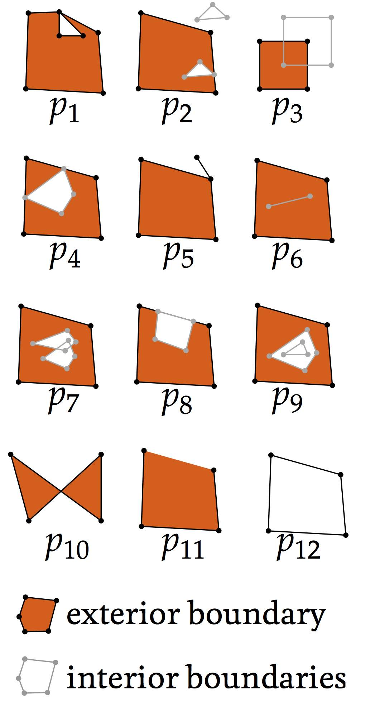
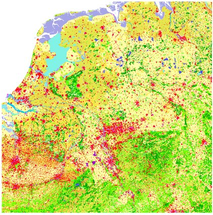
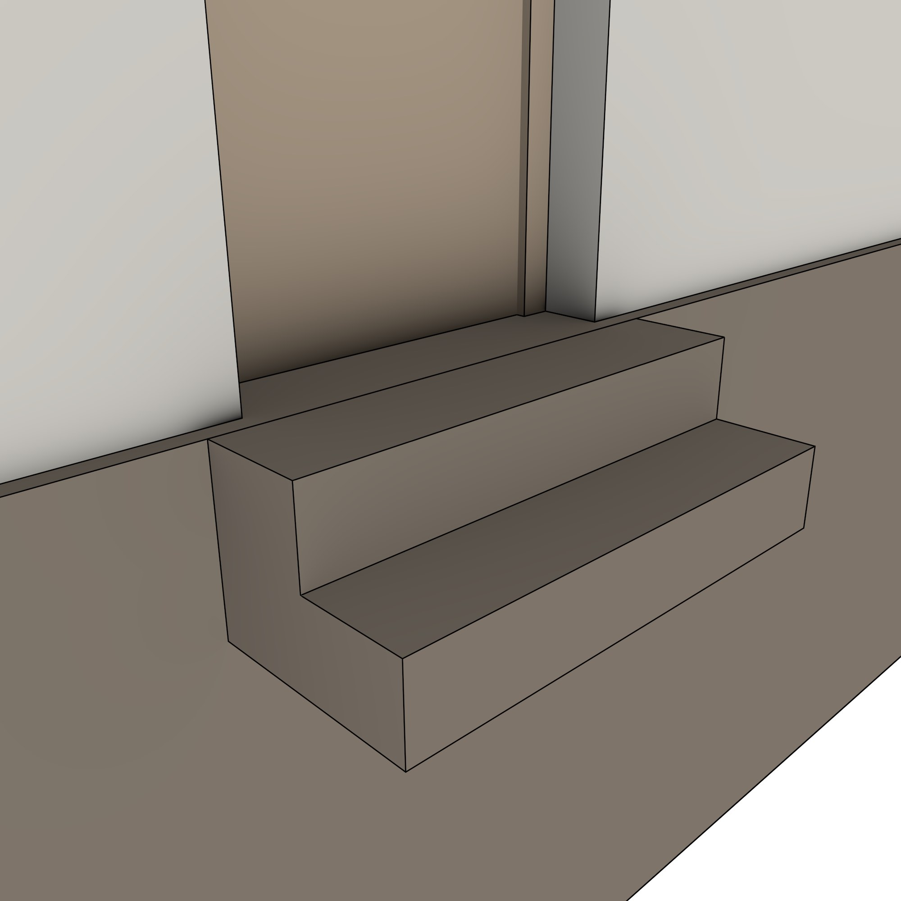
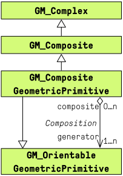

The representations described in Part I and the operations described in Part II work well on perfectly valid data. Objects are assumed not to overlap each other, to be properly closed with no degenerate geometries, and to have perfectly planar faces which are consistently oriented, among many other validity criteria. Unfortunately, as §10.1 explains, GIS processes often fail to clearly specify which criteria are expected and real-world data often fails to meet them, with consequences ranging from the innocuous to a complete inability to use a desired tool, including instances where software gives erroneous results unbeknownst to the user. As GIS datasets can be rather intricate and expensive to acquire, they are not easily replaceable and must therefore be repaired, i.e. they must be processed into geometric models that conform to certain validity specifications, so as to make them fit for use.
In the context of this thesis, clean geometric models are important as they are the base for the higher-dimensional models using the representations and operations described in previous chapters. The following sections thus describe the background and a particular solution used in this thesis to obtain valid polygons and planar partitions in §10.2, and valid polyhedra and 3D space partitions in §10.3. The chapter concludes with a generalisation of the definition of validity in arbitrary dimensions in §10.4, which can be used for both higher-dimensional objects and space partitions.
§10.2 is largely based on the papers:
- Validation and automatic repair of planar partitions using a constrained triangulation. Ken Arroyo Ohori, Hugo Ledoux and Martijn Meijers. Photogrammetrie, Fernerkundung, Geoinformation 5, October 2012, pp. 613–630.
- A triangulation-based approach to automatically repair GIS polygons. Hugo Ledoux, Ken Arroyo Ohori and Martijn Meijers. Computers & Geosciences 66, May 2014, pp. 121–131.
10.1 Motivation
The representations described in Part I are each able to effectively represent a particular class of objects. For example, most data structures are intended for 3D space partitions whose 3D objects have surfaces that form 2-manifolds, and \(n\)D combinatorial maps are capable of representing subdivisions of orientable quasi-manifolds, which within this thesis are generally further limited to having only linear geometries.
Similarly, the operations described in Part II can only return good results when the input fulfils certain requirements. For instance, the extrusion operation from Chapter 6 requires the input data to form a space partition, the incremental construction algorithm from Chapter 7 requires the ridges of the facets of an object to form matching pairs (i.e. a quasi-manifold), and the linking approach from Chapter 8 will only form a valid 4D cell complex with 4-cells if a matching scheme that preserves all topological relationships between cells can be found or is provided. All these operations are also based on the assumption that the input cells themselves are valid, and are being completely bounded by valid lower-dimensional cells (i.e. facets, ridges, etc.) so as to form a valid cell complex.
The representations and operations presented in this thesis are not special in this sense. Validity assumptions are widely used in all software, especially when complex data is used as input, and are used to make many tasks more manageable, such as to interpret a dataset and load it into a particular data structure for internal usage, as well as for further operations that may be performed using this structure. However, GIS datasets are more complex than most other data130, and GIS software thus tends to make more assumptions than most other software.
Moreover, though making sure that these assumptions are true is highly desirable, testing for every possible invalid configuration in a spatial dataset is cumbersome and often unnecessary for a particular task at hand, while testing for only some invalid configurations depending on what needs to be done can easily become intractable and can result in a large number of redundant tests. Running these validation tests can also be difficult and computationally expensive, as many tests take longer to execute than some of the common tasks that a GIS is used for (e.g. visualisation of a dataset, simple statistical analyses, or checking the attributes of some objects).
At the same time, the datasets found in the GIS world are very diverse and their properties vary significantly. They can be generated using a large variety of GIS, CAD and 3D modelling software based on different processes, complying to different specifications and stored in different formats, each of which follows its own internal logic and structure. Most importantly, GIS datasets are created for different purposes or meant for general-purpose applications (e.g. CityGML [Gröger et al., 2012]). As such, a dataset’s specifications are often only vaguely defined, are defined only with regard for a particular application, or are not conformed with in practice.
It is thus perhaps unsurprising that invalid GIS datasets are prevalent [Panigrahi, 2014, Ch. 7] and a major source of problems for those who work with them. As shown in Figure 10.1, invalid datasets can be interpreted inconsistently in different software, leading to inconsistent or erroneous results. They can also make it impossible to perform a certain operation, either due to a failing precondition check or due to software crashes. A partial solution to this issue lies in validating these datasets, i.e. identifying the problematic objects in the data so that they can be discarded or (manually) fixed. There are a variety of checklists and (semi) automatic tools for this purpose, such as those provided by SAFE131 and ESRI132.

(a)

(b)
Figure 10.1: Different interpretations of a polygon with a hole that is partly outside its outer boundary (\(p_3\) in Figure 10.2). (a) ArcGIS133 considers the overlapping region as a hole, but the non-overlapping part of the hole as a new polygon (QGIS134 and FME135 do this as well). (b) GRASS136 removes the overlapping part from the polygon, becoming a new polygon with a different shape. No warning is shown in any software.↩
For example, it is possible to incorporate a set of formal preconditions for every operation, as is done in the design by contract software engineering pattern [Meyer, 1986] or the Eiffel programming language [ISO/IEC, 2007]. However, simply discarding problematic (subsets of) datasets is not always feasible, as GIS datasets can be expensive to acquire and thus irreplaceable in practice, and manually fixing errors can be an extremely time-consuming process. In fact, according to McKenney [1998], users of 3D CAD models for finite element analysis—which has similar requirements as certain computations in GIS, such as well-shaped and non-overlapping mesh elements—spend up to 70% of their time fixing the input CAD models. While similar figures for GIS are to the best of my knowledge not available, it is worth noting that CAD software tends to produce better quality models than GIS software133.
A more complete solution therefore lies in using methods to automatically repair a dataset, i.e. to make it conform to a particular set of validity criteria, enabling the full use of many more datasets than would otherwise be possible. As this requires a rather complex defensive programming approach, testing for various types of partially overlapping cascading errors and fixing them accordingly, it is best performed separately and called as needed rather than integrated into every operation of a GIS. The following sections describe such independent repair methods as were used in this thesis, which involve the creation of valid (multi)polygons and planar partitions from 2D GIS datasets (§10.2), and the creation of valid polyhedra and 3D space partitions from 3D BIM datasets (§10.3). These were then used as input for the different experiments described in Part II.
10.2 Creating valid (multi)polygons and planar partitions
10.2.1 What is a valid (multi)polygon or planar partition?
In most GIS file formats and the software that reads and writes them, polygons and multipolygons are defined in a manner that is consistent with the definitions in the Simple Features Specification [OGC, 2011; ISO, 2006]—an implementation of the ISO 19107 standard [ISO, 2005a]. The specification states that: ‘A Polygon is a planar Surface defined by 1 exterior boundary and 0 or more interior boundaries. Each interior boundary defines a hole in the Polygon’. Each of these boundaries is described as a LinearRing (cf. Figure 3.17). According to the specification, an outer ring should be oriented anticlockwise when viewed from a predefined top direction, which is generally (but not necessarily) the viewing direction in 2D or outwards when the polygon specifies part of the boundary of a polyhedron. Inner rings should be oppositely oriented, i.e. generally clockwise when viewed from the top direction.
The Simple Features Specification provides several validity rules for polygons, the most relevant of which are described below with examples of invalid polygons provided in Figure 10.2. The rules can be summarised as follows:
- each ring defining the exterior and interior boundaries is simple, i.e. non-self-intersecting (\(p_{1}\) and \(p_{10}\));
- each ring is closed (\(p_{11}\)), i.e. its first and its last points should be the same;
- the rings of a polygon do not cross (\(p_{3}\), \(p_{7}\), \(p_{8}\) and \(p_{12}\)), but they may intersect at one tangent point;
- a polygon does not have cut lines, spikes or punctures (\(p_{5}\) and \(p_{6}\));
- the interior of every polygon is a connected point set (\(p_{4}\));
- each interior ring creates a new area that is disconnected from the exterior (\(p_{2}\) and \(p_{9}\)).
Similarly, the specification provides a definition and some validity rules for multipolygons. A MultiPolygon is defined as a MultiSurface forming an aggregation of Polygons, which also follows certain validity criteria, which can be summarised as follows:
- the interiors of its polygons do not overlap, i.e. their point set intersection should be empty;
- the boundaries of its polygons may only touch at a finite number of points;
- a multipolygon does not have cut lines, spikes or punctures;
- the interior of a multipolygon with more than one polygon is not a connected point set.
Intuitively, a planar partition is a set of polygons that form a subdivision of a region of the plane. Planar partitions are thus commonly used to model concepts where objects are expected not to overlap, such as land cover, cadastral parcels, or the administrative boundaries of a given country. Despite being a very frequently used representation in GIS, planar partitions are not explicitly defined in the main GIS standards.
Within the classes in the ISO 19107 standard [ISO, 2005a, §6.6], a planar partition could be considered as a GM_CompositeSurface, defined in the standard as ‘a collection of oriented surfaces that join in pairs on common boundary curves and which, when considered as a whole, form a single surface’. By following this definition, overlaps between polygons are explicitly forbidden, as a GM_Complex (a parent of GM_CompositeSurface) is defined as ‘a set of primitive geometric objects (in a common coordinate system) whose interiors are disjoint’. However, a GM_CompositeSurface explicitly allows gaps between the surfaces, as these would simply result in inner rings within the overarching single surface.
An alternative definition could be created based on the ISO 19123 standard [ISO, 2007, §6.8]—a standard focusing on coverages of various types. According to the standard, a planar partition can be considered as a type of CV_DiscreteSurfaceCoverage where ‘the surfaces that constitute the domain of a coverage are mutually exclusive and exhaustively partition the extent of the coverage’. Overlapping polygons are disallowed by them being ‘mutually exclusive’ and gaps are disallowed by the surfaces ‘exhaustively partitioning’ the extent. However, the standard states these conditions as something that occurs ‘in most cases’, whereas in a planar partition it should be considered as a strict prerequisite.
In a valid planar partition, there should thus be no overlapping polygons, and no gaps between them either unless these gaps are considered to be outside of the region. These two conditions are covered by the ISO 19107 standard in a different context, when it lists some possible inconsistencies of ‘spaghetti’ datasets represented as a GM_Complex, stating that ‘slivers and gaps are multiple lines that should represent the same geometry, but do not coincide, leaving areas of overlap between two surface boundaries (slivers), and gaps between them’ [ISO, 2005a, §6.2.2.6].
10.2.2 Commonly used validation and repair methods
Starting from an arrangement of line segments that are meant to define the boundary of a (multi)polygon, there are various rules that can be used to define its interior and exterior. Foley et al. [1995] discusses two commonly used sets of rules in vector-based graphic software, which are shown in Figure 10.3134.
In practice, GIS users often repair invalid polygons manually. Among the few documented automatic solutions, it is possible to use a ‘buffer-by-0’ operation [Ramsey, 2010] or PostGIS 2.0’s ST_MakeValid function139.
The validation of planar partitions is usually performed using a checklist of individual tests that together ensure its validity. For instance, Plümer and Gröger [1997] specify that a valid planar partition consists of: no dangling edges, no zero-length edges, planarity, no holes, no self-intersections, no overlaps, and having a connected graph. However, it is worth noting that without the use of a supporting structure, some of these tests can be problematic or computationally expensive. For instance, checking whether any possible pair of polygons overlap can have quadratic behaviour even when heuristics to speed up the process are used [Badawy and Aref, 1999; Kirkpatrick et al., 2000], and robustness issues are significant in polygon intersection tests [Hoffmann, 1988]. Finding the potential gaps in a planar partition is also a problem, as it can require computing the union of the entire set of polygons [Margalit and Knott, 1989; Rivero and Feito, 2000].
The most common method used to repair a planar partition is based on the assumption that polygons approximately match each other at their common boundaries. If the adjacent polygons are within a certain distance threshold of each other along their common boundaries (Figure 10.4a), and all parts further apart than this threshold are known not to be common boundaries (Figure 10.4b), it is possible to snap together the polygons using this threshold, while in theory keeping the rest untouched. This method of planar partition repair is available in many GIS packages, including ArcGIS, FME, GRASS and Radius Topology140.
The threshold value for certain input dataset(s) is then usually manually determined, either by trial and error, or by analysing certain properties of the datasets involved (e.g. point spacing, precision, or map scale). However, it is often hard to find an optimal threshold for certain datasets, and sometimes impossible as such a threshold does not even exist (e.g. because point spacing in some places might be smaller than the width of the gaps and overlaps present).
10.2.3 Repair using a constrained triangulation
The method developed to repair polygons and planar partitions uses a constrained triangulation of the input polygons as a base structure. Constrained triangulations have distinct properties that make them useful as a base for a repair algorithm. The can be built efficiently with a variety of approaches [Guibas and Stolfi, 1985; Clarkson et al., 1992], can easily be made numerically robust141, can be used for quick traversal and point location [Mücke et al., 1999], and have fast and robust implementations in several libraries, such as CGAL [Boissonnat et al., 2002], Triangle142 [Shewchuk, 1997] and GTS143.
The method used to repair individual (multi)polygons exploits these properties and consists of three broad steps, which are shown in Figure 10.5 and described as follows:
- construction of the constrained triangulation of the line segments in the input, processing outer and inner rings identically and including an extra edge that connects the first and last vertices of a ring when these are not the same (Figure 10.5b);
- labelling of each triangle as either outside or inside, which is based on an extension of the odd-even rule that supports overlapping lines by adding or removing (parts of) constraints in the triangulation (Figure 10.5c), taking only edges that are constraints into account;
- reconstruction of the interior areas as a repaired multipolygon140 (Figure 10.5d).
(a)
(b)
(c)
(d)
Figure 10.5: Steps to repair a (multi)polygon using a constrained triangulation: (a) input data, (b) triangulation, (c) labelling, and (d) reconstruction.↩
This method is remarkably efficient, and its implementation based on CGAL classes is able to process large polygons quickly. As an example, Figure 10.6 shows the process on the largest polygon in the CORINE land cover dataset145, which consists of almost 1 189 903 vertices and 7 672 holes, which is processed in under a second.
(a)
(b)
(c)
(d)
Figure 10.6: Processing the largest polygon in the CORINE land cover dataset: (a) outer and inner boundaries, (b) triangulation, (c) labelling, (d) reconstruction.↩
The method to repair a planar partition then uses polygons which are known to be valid based on the previous method. It consists of four main steps, shown in Figure 10.7, and is as follows:
- the constrained triangulation of the input segments forming the (now valid) polygons is constructed;
- each triangle is labelled with the labels of the polygons inside which it is located, such that problems are detected by identifying triangles having no or multiple labels;
- problems are fixed by re-labelling triangles according to customisable criteria, such that each triangle has exactly one label;
- the polygons are reconstructed from the triangulation.
(a)
(b)
(c)

(d)
(e)
(f)
Figure 10.7: Steps to repair a planar partition using a constrained triangulation: (a) input data, (b) triangulation, (c) labelling, (d–e) relabelling problematic triangles, (f) reconstruction.↩
Various local repair methods can thus be defined, all of which are based on choosing how to relabel a triangle which no label or with multiple labels. Figure 10.8 shows a few examples of such methods. Within this thesis, planar partitions are obtained by repairing invalid regions using the longest boundary with a neighbour (Figure 10.8c) if possible, as this tends to produce a cartographically more pleasing result, and a random neighbour (Figure 10.8d) otherwise.

(a)

(b)

(c)

(d)
Figure 10.8: Various repair methods can be defined based on relabelling triangles or sets of connected triangles. For instance, based on (a) the input data, it is possible to relabel: (b) an invalid triangle based using its longest boundary with a neighbour, (c) an invalid region of connected triangles using its longest boundary with a neighbour, or (d) an invalid region of connected triangles using a random neighbour.↩
This method is able to process large datasets quickly, such as the one shown in Figure 10.9, which consists of 16 tiles of the CORINE land cover dataset in a 4\(\times\)4 configuration. It has 63 868 polygons with a total of 6 622 133 vertices and was processed in 4 minutes 47 seconds. By comparison, both ArcGIS and GRASS are unable to repair this dataset by snapping geometries, while FME repairs it in 15 minutes 48 seconds146, also using snapping. Note that apart from the fact that snapping is slower, it does not guarantee a valid result.
10.3 Creating valid polyhedra and 3D space partitions
10.3.1 Motivation: IFC input data
As discussed in §3.2.2, the data models used in 3D GIS have often favoured an approach where objects that are volumetric in reality are modelled as a set of their (visible) surfaces, which can be easily captured after the objects are built. In addition, the volumetric objects that are small, elongated or thin are sometimes not modelled as volumes, but they are instead respectively modelled as points, curves or surfaces. For instance, in 3D models encoded in CityGML [Gröger et al., 2012], all objects are modelled as surfaces that do not necessarily form closed volumes, and thin objects (e.g. roof overhangs, windows and doors) are often modelled as single surfaces.
The volumetric models that are often used in CAD and BIM, such as those in IFC format [ISO, 2013], follow a different approach, which is shown in Figure 10.10. In it, almost all real-world volumetric objects, i.e. the objects with a non-zero volume, are modelled as volumes as well. This approach is more expensive in terms of space and makes certain computations more difficult, such as obtaining the volume of a room that is only represented implicitly by a set of (volumetric) walls, doors and windows around it. However, the approach is ultimately a more powerful representation that is closer to reality, enabling more complex operations, such as the structural analysis of a building, and eliminates the ambiguities inherent in interpreting volumetric real-world objects that have been modelled as points, curves or surfaces.
Figure 10.10: A surface-based model (left) consists of a set of semantically labelled surfaces, which are shown here in different colours. A volumetric model (centre+right) instead consists of a set of semantically labelled volumes.↩
Although the volumes in such a model do not generally fit together perfectly, they can nevertheless be better processed147 into a 3D space partition consisting of a set of non-overlapping 3D objects, where each of the volumes—and optionally also their vertices, edges and faces—is labelled with appropriate semantic information148. The result is thus a space-partitioning 3D model, which is analogous to the 2D planar partitions often used to model coverages in GIS. Such a model can be stored in a computer using the topological data structures for 3D (§3.1.3) or \(n\)D (§4.3.5) cell complexes.
This makes a volumetric model a better base for a higher-dimensional representation, as it fully exploits the properties of higher-dimensional data structures and their operations. For instance, taking the examples of this thesis, it can be extruded into higher dimensions (Chapter 6) or multiple such 3D models can be linked into a single 4D model (Chapter 8).
A space-partitioning model is also better able to take advantage of the complex 3D models that are already created during the design and construction processes of a building, such as the faces that form a room, storey or building. This avoids the need to extract or abstract appropriate surfaces for their recreation in a GIS model, such as was done by Donkers [2013]. Since architectural and BIM models have a strong emphasis on representing individual 3D elements that need to be designed, manufactured and put together, such as those shown in Figure 10.11, as well as the fact that these elements generally do not overlap in reality (except as part of hierarchies), they are ideally suited to be used in a space-partitioning model.
10.3.2 What is a valid solid or 3D space partition?
The ISO 19107 standard [ISO, 2005a, §6.3.18] defines 3D objects with 3D holes that are known as solids, which are specified based on a boundary representation scheme. As shown in Figure 10.12, the standard thus defines a GM_Solid with a boundary operation returning a GM_SolidBoundary, which is a ‘sequence of sets of GM_Surfaces that limit the extent of [the] GM_Solid}’. Each of these sets of surfaces describes one of the boundaries of the GM_Solid as a GM_Shell, corresponding to either the outer boundary for the solid150 or one of its holes.
Figure 10.12: The ISO 19107 standard [ISO, 2005a, §6.3.2] is able to specify the boundaries of GM_Curve, GM_Surface and GM_Solid as subclasses of GM_Boundary, respectively a GM_CurveBoundary linked to a pair of GM_Point (the end-points of a line segment), GM_SurfaceBoundary linked to a set of instances of GM_Ring, and a GM_SolidBoundary linked to set of instances of GM_Shell.↩
A GM_Shell [ISO, 2005a, §6.3.8] thus represents ‘a single connected component of a GM_SolidBoundary’. It is known to be simple, and consists of a set of oriented instances of GM_Surface composed of instances of GM_SurfacePatch, which intuitively form a cellular subdivision of the surface and themselves have a GM_SurfaceBoundary. A GM_SurfaceBoundary represents an area potentially with any number of holes, each of which is stored as a reference to a GM_Ring. A GM_Ring [ISO, 2005a, §6.3.6] is additionally defined as being simple.
GM_Object [ISO, 2005a, §6.2.2], a parent class to all the classes previously mentioned, defines every object as a point set and provides the definition of simple as a ‘GM_Object [that] has no interior point of self-intersection or self-tangency. In mathematical formalisms, this means that every point in the interior of the object must have a metric neighborhood whose intersection with the object is isomorphic to an \(n\)-sphere, where \(n\) is the dimension of this GM_Object’. As discussed by Ledoux [2013], this implies that shells are effectively 2-manifolds. Rings are similarly 1-manifolds.
It is important to note that even though each GM_Ring and GM_Shell is individually simple, the boundary of the GM_Surface or GM_Solid that they together describe does not need to be simple. A common example would involve an inner ring/shell tangent to the outer ring/shell containing it. Arguably, the standard does appear to explicitly forbid intersections between the interior of rings or shells as GM_Complex is a parent class of GM_SurfaceBoundary and GM_SolidBoundary and this class requires its composing primitives to be ‘geometrically disjoint’. However, this interpretation is problematic as it would arguably also forbid inner rings being inside their containing outer ring.
Alternatively, it is possible to consider that the standard does not specify any restrictions regarding the interactions between rings of a surface or between shells of a solid. As the standard explicitly states that ‘implementations may enforce stronger restrictions on the interaction of boundary elements’, it might be the responsibility of other implementing standards to place appropriate restrictions.
Although the GML standard [OGC, 2007] implementing ISO 19107 does not specify such restrictions, it is possible to use those defined in the Simple Features Specification in 2D (§10.2) and define analogous ones in 3D [Ledoux, 2013]. One possible formulation of these could be as follows:
- the shells of a solid do not cross, but the shells on the boundary of a solid may intersect only at a vertex or edge;
- the interior of every solid is a connected point set;
- each interior shell creates a new volume that is disconnected from the exterior.
Intuitively, a 3D space partition is a subdivision of a region of 3D space into non-overlapping solids. However, just as with planar partitions, 3D space partitions are usually not strictly defined. Following the same logic as with planar partitions in §10.2, a 3D space partition can be considered as an ISO 19107 GM_CompositeSolid [ISO, 2005a, §6.6.13], which is defined in the standard as a ‘a set of solids that join in pairs on common boundary surfaces to form a single solid’. While overlapping solids are explicitly forbidden by a GM_CompositeSolid inheriting from GM_Complex in which ‘[primitive] interiors are disjoint’, gaps between the solids are explicitly allowed.
An alternative definition could also be created based on the ISO 19123 standard by considering a 3D space partition as a type of CV_DiscreteSolidCoverage [ISO, 2007a, §6.10], which states that ‘generally, the solids that constitute the domain of a coverage are mutually exclusive and exhaustively partition the extent of the coverage’. While overlaps and gaps are respectively eliminated by the ‘mutually exclusive’ and ‘exhaustively partition’ conditions, the word ‘generally’ implies that these are not always enforced.
10.3.3 Common problems for 3D objects in an IFC file
An IFC model in theory consists of a set of 3D objects that mostly do not overlap. However, there are a few common problems that cause some of these 3D objects to be invalid or prevents them from forming a clean space partition. The most significant of these are the following:
- Implicit geometries Objects are often represented using sweeps, intersections of half-spaces and Boolean set operations, such as in the case of openings as shown in Figure 10.13. These need to be converted to explicit (boundary representation) objects that can be made to fit with other objects. As these need to be discretised, they will often not perfectly match the shape of the original objects, sometimes creating problems in their interaction with other objects.
(a)
(b)
(c)
Figure 10.13: In the (a) IfcOpenHouse dataset151, the openings where the windows and door fit are not explicitly carved out from the wall volumes. Instead, the dataset consists of (b) walls with simple shapes and (c) the openings themselves as large boxes. A Boolean point set difference thus needs to be computed in order to obtain the final explicit geometries.↩
- Local coordinate systems Objects are defined using a local coordinate system, which might differ per object. As the parameters of these coordinate systems are stored (and computed) in a finite computer representation, this will cause the objects not to fit together perfectly. In addition, applying a transformation to embed all objects into a unique coordinate system using computed arithmetic will cause additional problems. The result is that objects that visually appear to fit together do not actually do so, having small gaps and overlaps between them as shown in Figure 10.14.
(a)
(b)
(c)
Figure 10.14: The volumes in the (a) IfcOpenHouse dataset do not perfectly match each other at their common boundaries. (b) The two volumes forming the roof actually do not touch, causing the house not to be closed. (c) The left wall and the foundation volumes have a small overlapping portion (i.e. the wall sinks inside the foundation).↩
- Hidden intentional overlaps Not caring about hidden object intersections is common practice in most 3D modelling approaches. By not caring about these intersections, it is possible to ease and speed up the modelling process by using simpler volumes (e.g. boxes or rectangles) than would otherwise be required and hiding their undesirable parts behind or inside other objects, as is shown in Figure 10.15.
(a)
(b)
(c)
Figure 10.15: (a) The right wall and the right roof volumes in the IfcOpenHouse dataset visually appear to match each other, but the (b) right wall and (c) right roof are modelled as parallelepipeds, so they have a non-empty intersection (a triangular pyramid).↩
10.3.4 Commonly used validation and repair methods
In order for software to be able to process invalid polyhedra, various automatic validation and repair methods have been developed, detecting and/or fixing some of the possible invalid configurations that can exist. The possible invalid configurations are many and partly overlap or cascade (from lower to higher dimensions), but a possible list can be generated by systematically exploring those that occur at the ring, polygon, shell and solid levels152. For instance, Wagner et al. [2013] tests for 13 types of invalid configurations while Ledoux [2013] tests for 26, notably including: consecutive points in a ring with the same coordinates, rings that are not closed or self-intersect, polygons with intersecting rings or with an inner ring outside the outer ring, shells that are not closed or are not 2-manifold, and solids with intersecting shells.
Repairing individual rings and polygons can be basically done using the processes outlined in §10.2, even if these are embedded in 3D rather than 2D. For this, rings and polygons can be first projected onto a certain plane (e.g. the best-fitting one, or one obtained by disregarding a coordinate of its vertices in a manner that does not create new degenerate shapes) or a restricted triangulation [Cheng et al., 2012, Ch. 13] could be used as a basis for a repair procedure.
Repairing shells and solids are problems that are also partly related to those discussed previously, as a shell can be seen as a planar partition that wraps around an object, i.e. it is watertight, while the constraints that define how the inner and outer shells of a valid solid should interact are similar to those defining the interaction of inner and outer rings within a valid polygon. However, the methods that have been presented previously are much less applicable to shells and solids.
Instead, a shell can often be seen as a mesh that should be closed, and it is thus possible to repair individual shells with the procedures used for surface reconstruction and mesh repair. There are various good surveys of the methods that can be used to repair various problems in polygonal meshes, such as Ju [2009] and Attene et al. [2013]. Some of these problems and their respective methods are summarised below. However, it is important to notice that many methods are intended for meshes representing the boundary of a single ‘smooth’ 2-manifold, making them not applicable to the great majority of BIM and GIS models where perpendicular angles are common (e.g. those between walls and floors/ceilings).
Rossignac and Cardoze [1999] propose a method to make polygonal meshes combinatorial manifolds, determining an appropriate order for a set of edges around a face or for a set of faces bounding a volume such that non-manifolds can be stored using a manifold data structure (Figure 3.10). Guéziec and Lazarus [2001] treat the problem from a geometric point of view, converting non-manifold edges into thin volumes by cutting and joining the mesh around them. Attene et al. [2009] propose a method to make tetrahedral meshes153 manifold—something that can be used also for solids by computing their constrained tetrahedralisation.
In a similar manner as in GIS, small gaps in a mesh (causing a shell not to enclose any space) can be naively repaired by snapping vertices [Rock and Wozny, 1992], but this requires an error-prone threshold and can lead to topological errors. Iteratively snapping boundary edges together works better [Sheng and Meier, 1995], as it is possible to start from a single corresponding pair of edges, and then iteratively ‘zip’ together corresponding edges that are adjacent to these. Barequet and Sharir [1995] follows a related approach, matching certain edges and triangulating the remaining gaps. Turk and Levoy [1994] shows how overlapping triangular meshes154 can be fixed by clipping all but one of a set of overlapping triangles, retriangulating them afterwards.
Holes in a mesh, which tend to be bigger than gaps and reflect missing parts of a surface (e.g. the bottom of a house, the sides of a terraced house, or a surface that is hidden from a typical point of view), require different methods. In many cases, a hole is close to planar and can thus be simply projected to 2D and triangulated [Bøhn and Wozny, 1992]. However, in other cases the holes are far from planar, and it is thus necessary to use more complex methods. For instance, Lévy [2003] fills holes while attempting to minimise a certain objective function representing the energy needed to fill it, Wang and Oliveira [2007] uses moving least squares fitting of the points around it149 and Podolak and Rusinkiewicz [2005] does so by subdividing space into regions deemed to be completely in or out of the shell. Nooruddin and Turk [2003], Bischoff et al. [2005] and Hétroy et al. [2011] use voxel-based methods to attempt to determine the interior and exterior of a shell and thus close a mesh.
Specifically in the context of buildings, which have different characteristics from many other meshes such as sharp corners and orthogonal surfaces, Bogdahn and Coors [2010] and Alam et al. [2013] propose two methods that create a smooth 2-manifold, but do not guarantee their results. Zhao et al. [2014] attempts to solve gaps, holes and overlaps in a building mesh simultaneously by using a constrained tetrahedralisation [Si and Gärtner, 2005] of a set of faces, progressively carving away tetrahedra that are deemed as not belonging to its interior based on a set of rules. The possible intersections between the faces are explicitly computed by the constrained tetrahedralisation, so that the starting tetrahedra form a 3D space subdivision.
Finally, the problem of creating a valid 3D space partition is loosely related to mesh simplification and more closely to the topological reconstruction of a 3D model, which sometimes deals with computation of topological relationships from imperfect datasets. Generally, the latter methods work by snapping the geometries that lie within a threshold. For instance, Horna et al. [2006] snaps together generalised map darts that lie within a threshold \(\varepsilon\), connecting them by the appropriate involution \(\alpha\), which is based on the steps of the reconstruction process.
10.3.5 Repair using snapping and Boolean set operations
Despite the fact that the methods presented above fix many of the problems in individual 3D objects, these methods are not always sufficient to create a valid 3D space subdivision. For instance, the methods that are based on snapping are unable to create a space partition when adjacent geometries are farther than the snapping threshold or their overlapping regions have a width larger than the threshold. Similarly, most methods to repair meshes do not guarantee that they form properly enclosed spaces and cannot deal well with solids with inner shells.
A different technique that solves many of these issues was thus developed for this thesis. It starts from a set of separate 3D objects that approximately form a 3D space partition, such as those that are commonly found in IFC building models. The method starts by handling every object separately, obtaining a valid interpretation of each that is stored in an exact representation. It then snaps objects together in order to remove small gaps and overlaps at their common boundaries. Finally, it uses Boolean set operations to remove larger overlaps and in order guarantee that a 3D space partition is obtained. Unlike most repair methods used in GIS, it tries to avoid triangulating every face of an object but still manages to obtain perfectly planar faces (in memory). These steps required are described in detail as follows:
-
Rough individual polyhedra One or more ‘rough’ polyhedral representations of every object are first extracted from the input model. These rough representations should be combinatorially valid quasi-manifolds, being composed of patches that join in pairs at their common boundaries. However, at this stage the polygonal patches can have geometric issues, such as not being planar and might intersect geometrically.
In order to obtain the rough polyhedral representations, every object is first individually parsed, converting implicit geometries into explicit geometries using Boolean set operations (Figure 10.13) and triangulating curved surfaces. A transformation is then applied to convert every object’s coordinates to a global coordinate system. Finally, the faces of every object are extracted, object by object, and used to incrementally construct a set of polyhedra. This is done by starting from a given face and attempting to add adjacent faces until a closed shell is formed, which is repeated until all faces of an object are processed or the remaining faces cannot form any closed shells.
-
Clean individual polyhedra Clean individual polyhedra are then created from the rough polyhedra. In order to do this, the best fitting plane to the vertices of each face is first computed using linear least squares (Figure 10.16) and is stored as a plane equation. Considering these planes as constraints, all the vertices of every polyhedron are moved to an exact intersection of as many as possible of its incident face planes using a greedy algorithm unless this would result in a too large shift (as defined by a threshold). If some plane constraints could not be met, the corresponding faces are triangulated, thus becoming perfectly planar. The planes of these new triangular faces are computed.
(a)
(b)
Figure 10.16: The best fitting plane to the vertices of every face is computed, here showing those belonging to (a) the floor, back right wall, back left wall and back eave, and (b) the front left wall, front right wall and front eave.↩
-
Snapping vertices together The vertices of the polyhedra that lie within a threshold are snapped together, which removes most of the small gaps and overlaps in the model (Figure 10.17). This applies to vertices belonging to the same or to different polyhedra. The snapped vertices are now considered immovable. Iterating through all the faces of the polyhedra, if a face has at least three immovable non-collinear vertices, the plane passing through these vertices is computed and it is considered as fixed. When there are more than three non-coplanar vertices, the face is triangulated and the faces with three immovable vertices are also considered as fixed.
-
Snapping vertices to fixed planes The vertices that are still considered movable are then snapped to nearby fixed planes, if any, eliminating certain other small gaps and overlaps that do not have vertices in common (e.g. the steps in front of the IfcOpenHouse shown in Figure 10.18, which are actually not touching the house’s foundation). For this, iterating through every movable vertex, if it is incident to three or more faces with non-coplanar fixed planes and their intersection lies within a threshold of the vertex’s current position, the vertex is moved to the intersection of three of these planes and considered as immovable. If it has more than three incident faces with non-coplanar fixed planes, the faces of the planes that were not used, and are thus now not perfectly planar, are triangulated. This step can be repeated a given number of times, increasing the number of immovable vertices.
-
Fixing the remaining vertices The remaining movable vertices are fixed to their incident faces’ fixed planes or to their current location. For this, iterating through every movable vertex, the same procedure as the step above is followed. However, if a vertex has less than three incident faces with non-coplanar fixed planes, the vertex is fixed to the position on the intersection of its incident faces’ fixed planes that is closest to the vertex’s current position. These moved vertices are also considered as fixed and their incident faces’ planes are recomputed if necessary.
-
Creating individual Nef polyhedra A Nef polyhedron is created from every polyhedral representation using the precomputed planes for each face. Note that the exact representations of each plane (in the form of plane equations) are thus kept in this process.
-
Add the structural types The Nef polyhedra representing structural types (e.g. walls, slabs and beams) are incrementally added to a model, making sure that a new Nef polyhedron does not intersect the previously added ones. This is done using a Boolean set difference with a Nef polyhedron containing all previously added polyhedra, which is then regularised.
-
Remove the opening types The Nef polyhedra representing openings are carved out from the structural types by a Boolean set difference whose result is then regularised. They are also carved out from the Nef polyhedron representing the entire model.
-
Add the fixture types The Nef polyhedra representing fixtures (e.g. windows, doors, railings and frames) are incrementally added to the model in the same manner as the structural types. The fixtures will often fit into the openings carved out in the previous step.
The output of these steps is thus a list of Nef polyhedra representing each object using exact arithmetic. As these are regularised, they are known to contain their boundary. Because of this, the common faces of a pair of adjacent polyhedra are easy to obtain through the computation of their Boolean set intersection, which can be implemented quickly. These faces can therefore be used to easily compute a topological representation of the 3D space subdivision.
This 3D repair method was implemented with the help of several libraries: IfcOpenShell is used to parse the IFC file, Open CASCADE is used to triangulate implicit representations and to transform the objects’ coordinates to a global coordinate system, CGAL Polyhedron_3 is used to construct a half-edge representation of every polyhedron, and CGAL Nef_polyhedron_3 is used to store every Nef polyhedron and to perform the Boolean set operations between them.
10.4 Dimension-independent validity criteria
The previous sections have expanded on the criteria that define what is a valid object or space partition of objects in 2D and 3D. They also described some methods that can be used to make real-world data comply with these criteria, enabling the data to be used for more applications. As this thesis aims at utilising real-world higher-dimensional data, it is important to also consider what criteria can be used to define validity in higher-dimensional data.
The standards for geographic information in 2D and 3D described previously (Simple Features [OGC, 2011], GML [OGC, 2012] and ISO 19107 [ISO, 2005a]) are in theory limited to 2D and 3D. Concretely, the ISO 19107 standard explicitly states that ‘this International Standard is restricted to at most three dimensions’. However, all of these standards are easily extensible to higher dimensions. This would mostly involve the addition of new classes and corresponding definitions. However, the standards do contain minor hard-coded assumptions that are only valid for the 2D and 3D cases, such as how ISO 19107 and GML consider orientable curves and surfaces, but not orientable solids (Figure 3.18).
This section therefore defines higher-dimensional objects in a manner that is (mostly) harmonious with the standards used in the GIS world. An \(n\)-cell can be thus represented by the set of \((n-1)\)-cells in its (outer) boundary, using a similar mechanism as how other boundaries are represented in the ISO 19107 standard, which was shown previously in Figure 10.12.
Following the terminology used in the standard and as shown in Figure 10.19, such an extension of the would mainly entail a GM_OrientableGeometricPrimitive with a dimension attribute, which would set to \(n\). This class would be analogous to GM_OrientableCurve for dimension 1, GM_OrientableSurface for dimension 2 and a newly created GM_OrientableSolid for dimension 3, which would be a subclass of GM_OrientablePrimitive. The GM_OrientableGeometricPrimitive would be bounded by a GM_GeometricPrimitiveBoundary, which would be linked to aggregations of \((n-1)\)-dimensional instances of a newly created GM_Cell (with their dimension attribute set to \(n-1\)). This GM_Cell class would be analogous to GM_Point for dimension 0, GM_Curve for dimension 1, GM_Ring for dimension 2, and GM_Shell for dimension 3. Each of the instances of GM_Cell bounding a GM_OrientablePrimitive would represent either the outer boundary of the geometric primitive (if any), or one of any number of inner boundaries representing \(n\)-dimensional holes. This extension of the standard would seem to follow most in the spirit of ISO 19107.
Figure 10.19: A dimension-independent definition of a cell in a harmonised manner with other classes in the ISO 19107 standard [ISO, 2005a].↩
However, other alternative extensions could be considered. As GM_Curve, GM_Surface, and GM_Solid would essentially be special cases of GM_Cell, all of the former could be seen as redundant and eliminated. However, the standard already contains many specialisations that are somewhat redundant but that cover common use cases in geographic information, such as GM_Triangle and GM_Tin. Another possibility would be considering GM_Curve, GM_Surface, and GM_Solid as subclasses of GM_Cell or substituting the abstract GM_Primitive for a non-abstract GM_Cell, but this would involve a major change in the standard and seems to run counter to the preferred use of abstract top classes in the standard.
The definition of an GM_OrientableGeometricPrimitive as explained above also lends itself to the definition of sets of disjoint cells (akin to the Multi… classes in the standard) and cell complexes (akin to the Composite… classes in the standard), which could also be handled in the same manner as in the ISO 19107 standard. As shown in Figure 10.20, the standard already defines composite curves, surfaces and solids, which are equivalent to 1-, 2- and 3-dimensional cell complexes. A GM_CompositeCurve is ‘a list of orientable curves (GM_OrientableCurve) agreeing in orientation in a manner such that each curve (except the first) begins where the previous one ends.’, a GM_CompositeSurface is ‘a collection of oriented surfaces that join in pairs on common boundary curves’, and a GM_CompositeSolid is ‘a set of solids that join in pairs on common boundary surfaces’.
Figure 10.20: The cell complexes of dimension 1, 2 and 3 are respectively defined in the ISO 19107 standard [ISO, 2005a, §6.6.3] as the classes GM_CompositeCurve, GM_CompositeSurface and GM_CompositeSolid.↩
A similarly defined GM_CompositeGeometricPrimitive, shown in Figure 10.21 which should contain the dimension as a parameter, would thus be equivalent to a representation of a space partition of any dimension that allows objects with holes. It could be defined as ‘a set of \(n\)-dimensional orientable geometric primitives (GM_OrientableGeometricPrimitive) that join in pairs on common \((n-1)\)-dimensional boundary geometric primitives’. Note that this implies that the primitives combinatorially form an \(n\)-quasi-manifold, although geometrically they might not do so due to the presence of holes.
Following the validity criteria previously described in §10.2 and §10.3, it is possible to define additional validity criteria for an \(n\)-dimensional geometric primitive, which would serve to specify the conditions upon which its bounding cells may interact. These would be as follows:
- the bounding \(n\)-cells of an \(n\)-dimensional geometric primitive do not cross, but they might intersect only at a cell of dimension \(n-1\) or lower;
- the interior of every geometric primitive is a connected point set;
- each interior \(n\)-cell creates a new point set in \(\mathbb{R}^n\) that is disconnected from the exterior.
Meanwhile, an \(n\)-dimensional space subdivision should consist of a set of \(n\)-dimensional geometric primitives that are mutually exclusive and exhaustively partition an extent, itself a well-defined subset of \(\mathbb{R}^n\). As with the definitions of a planar partition and 3D space subdivision, this implies that there should be no overlapping primitives, and no gaps between them unless these gaps are considered to be outside the extent.
130. For instance, unlike other types of datasets, GIS objects often cannot be stored directly as a plain list of tuples, but are instead decomposed into primitives of a certain shape (§3.1, sometimes recursively, and these have to be defined in terms of its dimension and structure, topological relations, geometry and attributes, sometimes including rich semantics as well.↩
131. http://blog.safe.com/2014/11/data-quality-checklist/↩
132. http://www.esri.com/software/arcgis/extensions/arcgis-data-reviewer/~/media/Files/Pdfs/library/fliers/pdfs/arcgis-data-reviewer-checks.pdf↩
133. http://www.esri.com/software/arcgis/↩
134. http://www.qgis.org↩
135. http://www.safe.com/fme/↩
137. There are many reasons for this. For instance, CAD software makes wider use of topological data structures, and also has topology-aware and smart interactive editing tools (e.g. snapping to guide lines and nearby objects), which help to avoid problems where objects seem to be valid but have small errors, such as sliver polygons and shells that are not properly closed.↩

Figure 10.2: Several invalid polygons, with their outer boundaries shown in black and their inner boundaries in grey. The orange areas represent one possible interpretation of the interior of the polygons. Polygon \(p_{12}\) has an exterior and an interior boundary with the same geometry.↩
138. Foley et al. [1995] considers only polygons, but the rules as explained here also cover holes in polygons and multipolygons.↩
(a)
(b)
Figure 10.3: (a) According to the odd-even rule, a polygon’s interior is the region(s) that can be accessed by passing through an odd number of edges from its exterior. (b) According to the non-zero winding rule, a polygon’s interior is the region(s) around which the boundaries of a polygon do a non-zero number of revolutions.↩
139. http://postgis.org/documentation/manual-svn/ST_MakeValid.html↩
140. http://www.1spatial.com/software/radius_topology/↩
(a)
(b)
Figure 10.4: Defining a snapping threshold taking into account: (a) gaps and (b) overlaps.↩
141. Based on one robust geometric predicate that tests whether three successive points are collinear, have a clockwise or a anticlockwise orientation (e.g. Shewchuk [1996b]) and the computation of new vertices at the intersections of line segments. A constrained Delaunay triangulation only requires an additional predicate that determines whether a point lies inside, on or outside the circle defined by three other points.↩
142. https://www.cs.cmu.edu/~quake/triangle.html↩
143. http://gts.sourceforge.net↩
144. The output might only be representable as a multipolygon even if the input was a polygon↩
145. http://www.eea.europa.eu/publications/COR0-landcover↩
146. On tests where ArcGIS and GRASS were able to process the data, they were slower than FME.↩

Figure 10.9: A planar partition made from 16 tiles of the CORINE land cover dataset.↩
147. Akin to how a set of polygons can be better processed into a planar partition compared to a rough line drawing with undershoots and overshoots (i.e. a typical spaghetti dataset).↩
148. As shown in §5.4, these lower-dimensional cells can store important information about the relationships between the objects.↩
149. http://iai-typo3.iai.fzk.de/www-extern/index.php?id=1174&L=1↩
150. In some cases, there might not be an outer boundary of a solid, such as in non-Euclidean spaces or in the representation of unbounded solids. However, there is nearly always an outer boundary in the context of geographic information.↩
151. http://blog.ifcopenshell.org/2012/11/say-hi-to-ifcopenhouse.html↩
152. In theory, errors can occur at the point and edge level, such as a lack or excess of coordinates, but on a typical GIS input file these would be generally considered as syntactic rather than geometric errors.↩
153. assuming a tetrahedron-based data structure with adjacency relationships to other tetrahedra↩
154. As overlaps are embedded in 3D, they need to be defined from a given point of view.↩
155. Proposed by Lancaster and Salkauskas [1981], it is a widely used surface reconstruction method based on interpolating a set of points.↩
(a)
(b)
Figure 10.17: (a) The vertices of different polyhedra that lie within a threshold are snapped together, thus (b) removing a small gap. A small overlap works in the same manner.↩

Figure 10.18: The steps of the IfcOpenHouse do not actually touch the house’s foundation. Note that it also does not have common vertices with the foundation, so this gap cannot be closed by vertex-to-vertex snapping, but it can be closed by snapping its vertices on the left to the foundation’s right plane.↩

Figure 10.21: A definition of an \(n\)-dimensional space subdivision in a harmonised manner with other classes in the ISO 19107 standard [ISO, 2005a].↩